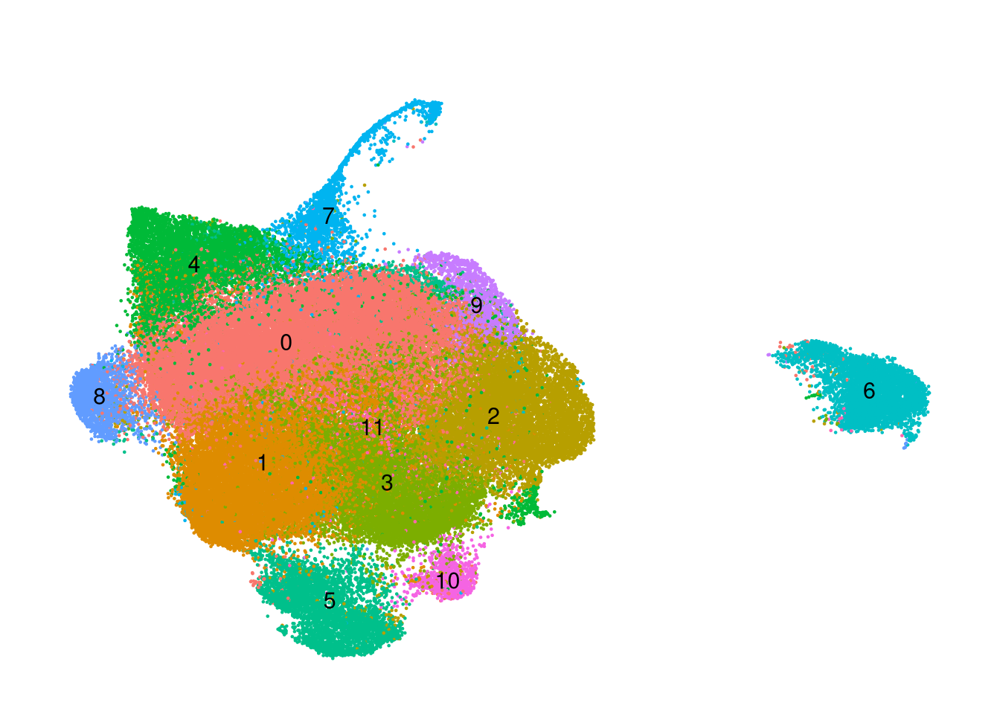
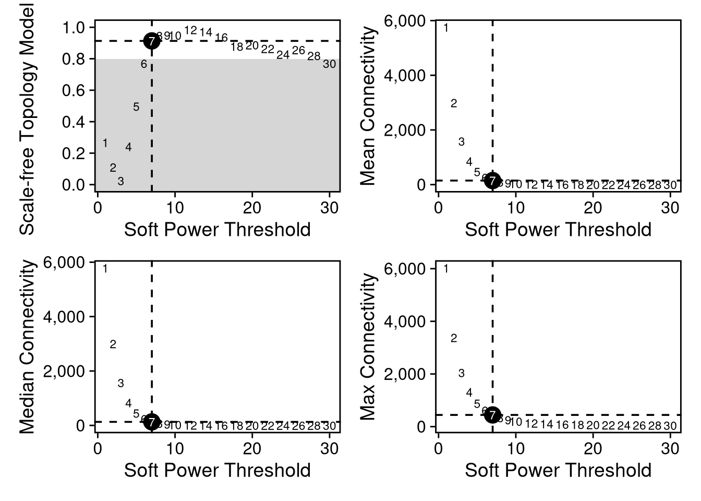
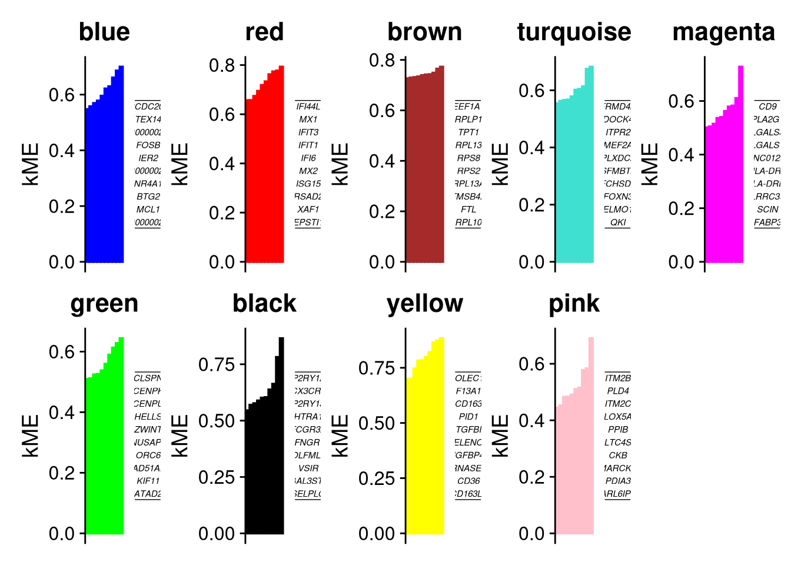
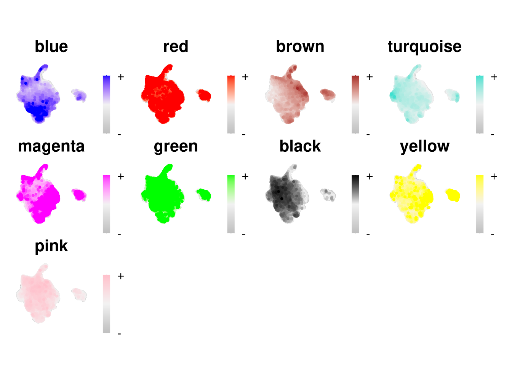
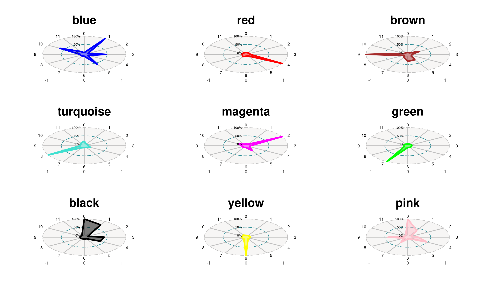

Code
rm(list = ls())Author: Carlo Zanetti
Performs hdWGCNA co-expression network analysis on the trisomy microglia dataset. Constructs metacells, selects soft power threshold, builds a TOM-based network, computes harmony-corrected module eigengenes (hMEs), and runs GO enrichment via EnrichrR. Follows the hdWGCNA basic tutorial.
Inputs: output/run1/objects/prelabelled_integrated_rpca.qs2 Outputs: WGCNA Seurat object, module graphs, enrichment PDFs written to output/run1/wgcna/
rm(list = ls())library(Seurat)
library(dplyr)
library(tidyr)
library(WGCNA)
library(hdWGCNA)Warning: replacing previous import 'GenomicRanges::intersect' by
'SeuratObject::intersect' when loading 'hdWGCNA'Warning: replacing previous import 'GenomicRanges::setdiff' by 'dplyr::setdiff'
when loading 'hdWGCNA'Warning: replacing previous import 'GenomicRanges::union' by 'dplyr::union'
when loading 'hdWGCNA'Warning: replacing previous import 'dplyr::as_data_frame' by
'igraph::as_data_frame' when loading 'hdWGCNA'Warning: replacing previous import 'Seurat::components' by 'igraph::components'
when loading 'hdWGCNA'Warning: replacing previous import 'dplyr::groups' by 'igraph::groups' when
loading 'hdWGCNA'Warning: replacing previous import 'dplyr::union' by 'igraph::union' when
loading 'hdWGCNA'Warning: replacing previous import 'GenomicRanges::subtract' by
'magrittr::subtract' when loading 'hdWGCNA'Warning: replacing previous import 'Matrix::as.matrix' by 'proxy::as.matrix'
when loading 'hdWGCNA'Warning: replacing previous import 'igraph::groups' by 'tidygraph::groups' when
loading 'hdWGCNA'library(cowplot)
library(patchwork)
library(qs2)
library(igraph)
library(magrittr)
library(glue)
library(enrichR)
library(GeneOverlap)
disableWGCNAThreads()
theme_set(theme_cowplot())
set.seed(42)
WGCNA::allowWGCNAThreads(nThreads = 2)Allowing multi-threading with up to 2 threads.run_num <- "run1"
out_dir <- file.path("output", run_num, "wgcna")
graphs_dir <- file.path(out_dir, "graphs")
objects_dir <- file.path(out_dir, "objects")
wgcna_name <- glue("emily_jan_{run_num}")
dir.create(graphs_dir, recursive = TRUE, showWarnings = FALSE)
dir.create(objects_dir, recursive = TRUE, showWarnings = FALSE)labelled_path <- file.path("output", run_num, "objects", "prelabelled_integrated_rpca.qs2")
if (!file.exists(labelled_path)) {
message("Required input not found: ", labelled_path, "\nRun seurat_trisomy_v1.qmd and seurat_trisomy_v2.qmd first.")
knitr::knit_exit()
}
seurat_obj <- qs_read(labelled_path)seurat_obj$cluster_id <- factor(Idents(seurat_obj))
seurat_obj$sample_id <- factor(seurat_obj$orig.ident)p <- DimPlot(seurat_obj, group.by='cluster_id', label=TRUE) +
umap_theme() + ggtitle('') + NoLegend()
p
seurat_obj[["RNA"]] <- CreateAssayObject(counts = seurat_obj[["SCT"]]@counts)Warning: Assay RNA changing from Assay5 to AssayWarning: Different cells and/or features from existing assay RNADefaultAssay(seurat_obj) <- "RNA"
seurat_obj <- NormalizeData(seurat_obj)seurat_obj <- SetupForWGCNA(
seurat_obj,
gene_select = "fraction", # the gene selection approach
fraction = 0.05, # fraction of cells that a gene needs to be expressed in order to be included
wgcna_name = wgcna_name
)Group by sample so metacells are created from same sample of origin
seurat_obj <- MetacellsByGroups(
seurat_obj = seurat_obj,
group.by = "sample_id", # specify the columns in seurat_obj@meta.data to group by
reduction = 'umap.rpca', # select the dimensionality reduction to perform KNN on
k = 25, # nearest-neighbors parameter
max_shared = 10, # maximum number of shared cells between two metacells
ident.group = 'sample_id' # set the Idents of the metacell seurat object
)
Idents(seurat_obj) <- "microglia"
seurat_obj <- NormalizeMetacells(seurat_obj)Normalizing layer: countsWGCNA requires a soft power threshold to ensure the gene network has a scale-free topology.
SFT -> most genes have few connections, while a few hubs have many.
seurat_obj <- SetDatExpr(
seurat_obj, assay = "RNA")Warning in asMethod(object): sparse->dense coercion: allocating vector of size
1.1 GiBseurat_obj <- TestSoftPowers(
seurat_obj,
networkType = 'signed' # you can also use "unsigned" or "signed hybrid"
)pickSoftThreshold: will use block size 3972.
pickSoftThreshold: calculating connectivity for given powers...
..working on genes 1 through 3972 of 11263Warning in (function (x, y = NULL, robustX = TRUE, robustY = TRUE, use =
"all.obs", : bicor: zero MAD in variable 'x'. Pearson correlation was used for
individual columns with zero (or missing) MAD.Warning in (function (x, y = NULL, robustX = TRUE, robustY = TRUE, use =
"all.obs", : bicor: zero MAD in variable 'x'. Pearson correlation was used for
individual columns with zero (or missing) MAD.Warning in (function (x, y = NULL, robustX = TRUE, robustY = TRUE, use =
"all.obs", : bicor: zero MAD in variable 'y'. Pearson correlation was used for
individual columns with zero (or missing) MAD. ..working on genes 3973 through 7944 of 11263Warning in (function (x, y = NULL, robustX = TRUE, robustY = TRUE, use =
"all.obs", : bicor: zero MAD in variable 'x'. Pearson correlation was used for
individual columns with zero (or missing) MAD.Warning in (function (x, y = NULL, robustX = TRUE, robustY = TRUE, use =
"all.obs", : bicor: zero MAD in variable 'y'. Pearson correlation was used for
individual columns with zero (or missing) MAD.Warning in (function (x, y = NULL, robustX = TRUE, robustY = TRUE, use =
"all.obs", : bicor: zero MAD in variable 'x'. Pearson correlation was used for
individual columns with zero (or missing) MAD.Warning in (function (x, y = NULL, robustX = TRUE, robustY = TRUE, use =
"all.obs", : bicor: zero MAD in variable 'y'. Pearson correlation was used for
individual columns with zero (or missing) MAD. ..working on genes 7945 through 11263 of 11263Warning in (function (x, y = NULL, robustX = TRUE, robustY = TRUE, use =
"all.obs", : bicor: zero MAD in variable 'x'. Pearson correlation was used for
individual columns with zero (or missing) MAD.Warning in (function (x, y = NULL, robustX = TRUE, robustY = TRUE, use =
"all.obs", : bicor: zero MAD in variable 'y'. Pearson correlation was used for
individual columns with zero (or missing) MAD.Warning in (function (x, y = NULL, robustX = TRUE, robustY = TRUE, use =
"all.obs", : bicor: zero MAD in variable 'x'. Pearson correlation was used for
individual columns with zero (or missing) MAD.Warning in (function (x, y = NULL, robustX = TRUE, robustY = TRUE, use =
"all.obs", : bicor: zero MAD in variable 'y'. Pearson correlation was used for
individual columns with zero (or missing) MAD. Power SFT.R.sq slope truncated.R.sq mean.k. median.k. max.k.
1 1 0.267 18.20 0.458 5750.000 5.78e+03 6020.0
2 2 0.111 7.23 0.970 2990.000 3.00e+03 3380.0
3 3 0.024 -1.89 0.916 1580.000 1.57e+03 2050.0
4 4 0.241 -3.86 0.780 851.000 8.29e+02 1310.0
5 5 0.497 -4.03 0.780 466.000 4.43e+02 876.0
6 6 0.769 -4.01 0.899 260.000 2.39e+02 613.0
7 7 0.913 -3.79 0.976 148.000 1.30e+02 444.0
8 8 0.947 -3.37 0.988 86.400 7.13e+01 331.0
9 9 0.949 -2.93 0.980 51.700 3.95e+01 252.0
10 10 0.949 -2.57 0.966 31.800 2.21e+01 196.0
11 12 0.984 -1.96 0.980 13.200 7.05e+00 127.0
12 14 0.971 -1.76 0.963 6.280 2.32e+00 102.0
13 16 0.937 -1.62 0.920 3.390 7.90e-01 86.2
14 18 0.879 -1.54 0.847 2.050 2.76e-01 75.5
15 20 0.887 -1.43 0.873 1.360 9.82e-02 67.6
16 22 0.864 -1.36 0.865 0.969 3.60e-02 61.5
17 24 0.827 -1.31 0.840 0.733 1.34e-02 56.7
18 26 0.857 -1.23 0.906 0.580 5.10e-03 52.6
19 28 0.820 -1.20 0.897 0.475 1.98e-03 49.1
20 30 0.770 -1.18 0.837 0.400 7.73e-04 46.0plot_list <- PlotSoftPowers(seurat_obj) Power SFT.R.sq slope truncated.R.sq mean.k. median.k. max.k.
1 1 0.26682740 18.165878 0.4575717 5754.9847 5783.2121 6022.3576
2 2 0.11053483 7.233747 0.9702855 2993.0794 2998.0197 3380.1032
3 3 0.02404144 -1.889392 0.9164226 1582.9425 1565.3427 2046.1957
4 4 0.24128267 -3.863393 0.7796488 851.3891 829.1830 1307.2296
5 5 0.49657839 -4.032561 0.7797495 466.0815 442.8920 876.3305
6 6 0.76914201 -4.011946 0.8989230 260.0613 238.9068 612.9242Warning: The `size` argument of `element_rect()` is deprecated as of ggplot2 3.4.0.
ℹ Please use the `linewidth` argument instead.
ℹ The deprecated feature was likely used in the hdWGCNA package.
Please report the issue to the authors.combined_soft <- wrap_plots(plot_list, ncol = 2)
print(combined_soft)
ggsave(
filename = file.path(graphs_dir,"soft_power_selection.pdf"),
plot = combined_soft,
width = 12, # increase width if labels overlap
height = 7, # increase height for more clarity
)power_table <- GetPowerTable(seurat_obj)Builds correlation matrix using metacells. Uses dendrogram to cluster genes into modules.
seurat_obj <- ConstructNetwork(
seurat_obj,
tom_name = wgcna_name, # name of the topoligical overlap matrix written to disk
tom_outdir = objects_dir,
overwrite_tom = TRUE
)Soft power not provided. Automatically using the lowest power that meets 0.8 scale-free topology fit. Using soft_power = 7
Calculating consensus modules and module eigengenes block-wise from all genes
Calculating topological overlaps block-wise from all genes
Flagging genes and samples with too many missing values...
..step 1
TOM calculation: adjacency..
..will use 2 parallel threads.
Fraction of slow calculations: 0.000000
..connectivity..
..matrix multiplication (system BLAS)..
..normalization..
..done.
..Working on block 1 .
..Working on block 1 .
..merging consensus modules that are too close..Plots dendrogram showing gene clustering
pdf(file.path(graphs_dir,"dendrogram.pdf"), width = 12, height = 7)
PlotDendrogram(seurat_obj, main='hdWGCNA Dendrogram')
dev.off()png
2 Harmony batch correction to the MEs - gives harmonised module eigengenes.
Calculate the ME which acts as a representative expression profile for the whole module. Due to multiple sequencing pools -> Harmony batch correction to these scores.
seurat_obj <- ScaleData(seurat_obj, features=VariableFeatures(seurat_obj))Centering and scaling data matrixseurat_obj <- ModuleEigengenes(
seurat_obj,
group.by.vars="pool_id"
)[1] "blue"Centering and scaling data matrixWarning: Keys should be one or more alphanumeric characters followed by an
underscore, setting key from pcablue to pcablue_pcablue_ 1
Positive: CCDC200, TEX14, ENSG00000262202, FOSB, ENSG00000285646, IER2, NR4A1, SERTAD1, BTG2, MIR142HG
ENSG00000287979, MCL1, SRGN, NFKBID, PPP1R10, MEPCE, MIR23AHG, ENSG00000289865, NR4A2, EGR1
KDM6B, CREM, HOOK2, LINC00910, PPP1R15A, FOS, DDX5, FAM53C, CD83, ENSG00000270103
Negative: KLF3, SLTM, MPHOSPH8, HNRNPA3, PRPF40A, ZC3H13, TOP1, SEMA6D, SRRM1, HCG25
CD53, ENSG00000290073, RAP1B, SNRNP70, SNW1, ZFAND6, ZNF90, NOL8, CDC40, TBC1D17
E4F1, PLPP7, PUM3, CASC9, ENSG00000290937, ZNF347, ATG4D, GRAP, ZSCAN32, PLCXD1
pcablue_ 2
Positive: DUSP1, FOS, KLF2, KLF6, JUN, RGS1, SAT1, RHOB, CD83, NR4A2
GADD45B, IER3, CH25H, JUNB, CEBPD, CCL3, DNAJB1, PHACTR1, CCL3L3, CCL4L2
JUND, ZFP36L1, C9orf72, SGK1, CCL4, SRGN, BTG2, TALAM1, OLR1, IER2
Negative: GSTM3, H2AZ1, ENSG00000285646, LINC00910, CROCC, PLEKHO2, SNHG3, TUBB4B, HNRNPAB, ALDH16A1
MEPCE, STX5-DT, TUBA1C, SAE1, NASP, ENSG00000289543, MAP3K11, NOSIP, CSRNP2, ENSG00000290117
ENSG00000289267, PYM1, SNHG1, ASL, ENSG00000288909, ENSG00000287296, GPR84, C14orf119, ZC3H12A, TRPT1
pcablue_ 3
Positive: RGS1, RAB20, LPCAT1, TBC1D7, PHACTR1, ENSG00000262810, KLHL6, TMEM156, ENSG00000285280, LINC01480
SPATA13, PLA2G4A, PRKCH, GLA, NFAM1, ENSG00000284999, PRMT9, GRAMD4, APOC4, MICAL1
NGLY1, LINC03002, MAEA, EXD3, OPRM1, GPR183, ELL2, ENSG00000236069, OXSM, PEBP4
Negative: EIF1, SRSF5, SERTAD1, PNRC1, EIF4A1, H3-3B, CCDC200, ENSG00000262202, ENSG00000285646, TEX14
ARF4, SNHG5, EGR1, ATF4, RPL22L1, SRSF7, RBM8A, H2AZ1, LINC00910, ENSG00000287979
IER2, JUND, IL1B, SDCBP, DDX3X, MEPCE, EIF4G2, BZW1, JUNB, STX5-DT
pcablue_ 4
Positive: ENSG00000262202, ENSG00000270022, ATP2B1-AS1, LINC00910, ENSG00000287979, ENSG00000288900, ENSG00000290039, CROCC, CLASP1-AS1, ENSG00000288755
PPP1R10, ENSG00000285646, ENSG00000276216, PTCH2, TRA2B, WSB1, ENSG00000289341, IKBKB-DT, ENSG00000287697, TEX14
SLC38A2, ENSG00000270103, ENSG00000259805, JUN, ENSG00000253736, ENSG00000289928, ENSG00000258820, WDR74, ENSG00000287190, TMEM107
Negative: EIF4A1, EIF1, H3-3B, CCL3, JUND, SLC25A3, IL1B, RBM8A, YWHAZ, BZW1
ZNF331, SLC2A3, PLEK, CCL3L3, SRGN, ATF4, HSP90AB1, UBE2J1, C5AR1, TPM4
ZFP36, ARMCX3, ATF3, PNRC1, SELENOK, SDCBP, CD69, HNRNPAB, PLAUR, JUNB
pcablue_ 5
Positive: DDX5, HNRNPA2B1, RHOB, RSRP1, HSPA5, HNRNPDL, SFPQ, PDK4, XBP1, FUS
SLC38A2, WSB1, SAT1, GOLGA8A, CD53, IER3, RSRC2, FPR1, SKIL, TAF1D
HP1BP3, TALAM1, CGAS, TRA2B, GLUL, FCGR1BP, HHEX, DNAJB1, IPCEF1, TOP1
Negative: CCL3, CCL4, SDCBP, CCL3L3, ATF3, LINC00963, FOSL2, CCL4L2, CXCL8, NR4A1
PRKCH, EGR2, ENSG00000287216, EIF1, C5AR1, STX11, RAB20, IL4I1, ENSG00000289959, TOM1
ENSG00000289259, CCL2, GRAMD4, NR4A3, NEAT1, STX17-DT, TTYH3, LINC02929, FOSL2-AS1, LINC01344 Transposing data matrixInitializing state using k-means centroids initializationWarning: Quick-TRANSfer stage steps exceeded maximum (= 4325200)Warning: Quick-TRANSfer stage steps exceeded maximum (= 4325200)
Warning: Quick-TRANSfer stage steps exceeded maximum (= 4325200)
Warning: Quick-TRANSfer stage steps exceeded maximum (= 4325200)
Warning: Quick-TRANSfer stage steps exceeded maximum (= 4325200)Harmony 1/10Harmony 2/10Harmony 3/10Harmony converged after 3 iterations[1] "grey"Centering and scaling data matrixWarning: Keys should be one or more alphanumeric characters followed by an
underscore, setting key from pcagrey to pcagrey_pcagrey_ 1
Positive: GLIPR1, RNF130, CTSB, CREG1, JAK1, CD302, MAF, ARL5A, LAPTM4A, GRB2
TCF25, EVI2B, RNF13, STAG2, TNFRSF1A, MICOS10, HPGDS, N4BP2L2, CPVL, LAIR1
CTSH, TMEM123, TGFB1, SERINC1, PTTG1IP, MILR1, RTN4, PCBP2, RAB31, MSL3
Negative: ZNF714, ELOVL5, AMOT, ZNF107, CEP295, PCNT, INSIG2, FUT8, MINDY2, MPHOSPH9
POGLUT3, ATL3, EIF4G1, VKORC1L1, CDK5RAP2, ZNF430, ZNF791, CEP43, SMC6, FIRRE
VPS13A, HK2, ITGB3, PMS1, VCL, TRIM24, PAQR5, DHTKD1, EFCAB11, POLA2
pcagrey_ 2
Positive: RTTN, DSCAM, SOCS6, XACT, SLC1A3, ITGAX, KCNMA1, TGFBR1, XYLT1, LINC01909
CCDC26, FNIP2, ACER3, HEG1, SYT17, GPD2, ITPR1, CYTH3, LPCAT2, TMEM154
FRRS1, PLPP1, BCL2, ENSG00000288857, PCLO, LINC01088, ADGRE2, SMAD3, PLAU, GRAMD1B
Negative: MAF, ABCG2, CCND1, GLIPR1, GATM, PTTG1IP, APLP2, CD302, GIMAP1, TMEM123
PDIA4, SERPINB6, CYSLTR1, MANF, FZD2, ADAP2, TNFRSF1A, NAGA, TMEM50B, LAPTM4A
SSR1, LMAN1, EBI3, IFT74, ATP6AP2, CCDC50, GIMAP6, CRELD2, RPN1, SPCS3
pcagrey_ 3
Positive: DNASE2, ADGRE2, ITGAX, TMEM154, PLAC8, C1orf54, MANF, HEG1, ATP6AP2, SHISAL2A
HPSE, CTSH, CTSB, RTTN, TOR3A, SPTBN1, HPRT1, HM13, SLC7A1, LCP1
SQOR, BHLHE41, SOCS6, HAMP, XYLT1, PCLO, TMEM70, XACT, P2RY11, QPCT
Negative: MAF, N4BP2L2, ADAP2, GLIPR1, NMRK1, SON, HPGDS, MTUS1, IL10RA, MDM4
CYSLTR1, MEF2C-AS1, ZFYVE16, ABCG2, ENSG00000288932, PHF3, PCM1, APLP2, PAXBP1, CCNL2
ZRANB2, APAF1, PRPF4B, NPHP3, ZMAT1, CD302, CREBRF, DELE1, DUSP16, CLK4
pcagrey_ 4
Positive: SLC1A3, CTSB, SOCS6, BHLHE41, RTTN, ITGAX, DNASE2, CTSH, HAVCR2, TGFBR1
DSCAM, GALNT1, LPCAT2, PLPP1, RTN4, MMP2, SON, ID2, SHTN1, TMED10
CTTNBP2NL, CYTH3, SPCS3, HM13, RPN1, ENSG00000257258, RDH11, KCNMA1, ATP6AP2, TMED7
Negative: PTGS2, KIRREL3, CFAP210, PLAC8, ITGB7, GPAT3, PLXNC1, PTPN13, ADGRE2, P2RX1
PRKG1, FUT8, NECTIN3, PIEZO2, PDE4DIP, DYNLT5, ACOT11, CCDC26, BICC1, LTB4R
PPP1R16B, NHSL1-AS1, GNAI1, GPR35, NIN, RAB11FIP1, SOCS2, RNF130, CABP4, ESYT1
pcagrey_ 5
Positive: SON, ENSG00000189229, PDIA4, CHCHD2, DNAJB11, TTC3, TMEM50B, HSPH1, PAXBP1, HERC2P3
MANF, PTTG1IP, MORC3, DNAJC3, ATP6AP2, ENSG00000287335, UBE2G2, FUT8, FANCC, ELOVL5
LINC00511, HAMP, ZC3HAV1, ITGB3, PCBP3, GNAI1, LTN1, SPCS3, MEST, MAGT1
Negative: POU6F2, YPEL3-DT, ENSG00000288857, ENSG00000286339, ENSG00000289168, LINC01088, CCDC92, ENSG00000254710, KLHL24, DSCAM
HBP1, STAG2, CREBRF, FAM199X, JAK1, MMP2, SOCS6, GUCY1A1, SMIM14, CPVL
LINC02245, MTURN, TNFAIP8L1, BHLHE41, MMP24OS, PRKAR1A, TCP11L2, EVI2B, CREG1, ARL5A Transposing data matrixInitializing state using k-means centroids initializationWarning: Quick-TRANSfer stage steps exceeded maximum (= 4325200)
Warning: Quick-TRANSfer stage steps exceeded maximum (= 4325200)
Warning: Quick-TRANSfer stage steps exceeded maximum (= 4325200)
Warning: Quick-TRANSfer stage steps exceeded maximum (= 4325200)
Warning: Quick-TRANSfer stage steps exceeded maximum (= 4325200)
Warning: Quick-TRANSfer stage steps exceeded maximum (= 4325200)
Warning: Quick-TRANSfer stage steps exceeded maximum (= 4325200)
Warning: Quick-TRANSfer stage steps exceeded maximum (= 4325200)
Warning: Quick-TRANSfer stage steps exceeded maximum (= 4325200)Harmony 1/10Harmony 2/10Harmony 3/10Harmony converged after 3 iterationsWarning: Key 'harmony_' taken, using 'bziua_' instead[1] "red"Centering and scaling data matrixWarning: Keys should be one or more alphanumeric characters followed by an
underscore, setting key from pcared to pcared_pcared_ 1
Positive: IFI44L, IFIT3, MX1, IFIT1, IFI6, MX2, ISG15, RSAD2, XAF1, IFI44
EPSTI1, OAS2, IFITM3, SAMD9L, IFITM1, STAT1, IFIT2, EIF2AK2, PARP9, LY6E
PARP14, HERC5, OAS3, SP110, USP18, B2M, CMPK2, IRF7, HERC6, OASL
Negative: MRPL39, PWP2, ZNF793, TMEM187, IFNGR2, RRP1B, HSPA13, UBE2F, RENBP, LIMA1
POTEF, NDUFV3, CCND3, BATF, SCIMP, SNX10, NUDCD1, POTEE, GART, NBN
PDXK, OGFR, MVP, RCN1, RRBP1, PTPRN2, GIMAP2, BTN3A1, APOL2, STX17
pcared_ 2
Positive: HLA-B, HLA-C, B2M, HLA-A, HLA-F, BST2, IFI27, C2, IFITM3, LGALS3BP
IFI6, LY6E, PSME2, SERPING1, S100A9, PSMB9, BTN3A2, CD48, PSMB8-AS1, IFNGR2
SHISA5, PDXK, ANKRD22, PPA1, SNX10, SCIMP, SIGLEC1, RENBP, PTPRN2, ODF3B
Negative: RIGI, PNPT1, DDX60L, HESX1, PPM1K, OASL, IFIT2, RNF213, RSAD2, CMPK2
HERC5, TRIM22, USP18, ZCCHC2, TNFSF10, PARP14, TRIM5, IRF1-AS1, HERC6, ZNFX1
STAT2, IFIT3, IFI16, IFIT1, PARP12, TRIM25, TRIM56, IRF1, SAMD9, IFIH1
pcared_ 3
Positive: WARS1, ANKRD22, PPA1, S100A9, LIMK2, TAP1, PSME2, IRF1, IL1RN, PSMB9
IFITM1, JAK3, TAP2, APOL6, IL15RA, SCO2, TYMP, CD48, NUDCD1, APOL2
MVP, APOL1, ZNFX1, LIMA1, RCN1, BAZ1A, SCIMP, GPR180, NBN, ADPRS
Negative: XAF1, IFI44L, EPSTI1, EIF2AK2, MX1, SP110, IFI44, OAS1, PARP14, BST2
IRF9, IFI16, IFI6, PARP9, SAMD9L, RNF213, STAT1, TRIM22, ADAR, UNC93B1
B2M, PLSCR1, OAS2, HERC5, PPM1K, SIGLEC1, IFI27, DDX60L, MX2, IFIT1
pcared_ 4
Positive: IFITM3, IFITM1, SIGLEC1, S100A9, LY6E, BST2, ISG15, SECTM1, IFI6, SERPING1
OAS3, IL1RN, PSME2, PPA1, LGALS3BP, LAP3, TYMP, MX2, SHISA5, UBE2L6
IFI35, IFI27, LIMK2, BAZ1A, RRBP1, USP18, FBXO6, RSAD2, JAK3, BATF
Negative: TLR3, HLA-B, RRP1B, TMEM187, PATL2, PWP2, HLA-C, GART, HLA-F, SCIMP
BTN3A2, POTEE, IRF9, HSPA13, HLA-A, TRIM22, GIMAP2, MRPL39, SAMD9, NDUFV3
POTEF, ZNF793, BTN3A1, TNFSF10, CCR1, TRIM21, SLFN12, PSMB8-AS1, STX17, ZCCHC2
pcared_ 5
Positive: PDXK, RENBP, NDUFV3, HSPA13, POTEF, IFNGR2, RRP1B, GART, PTPRN2, SIGLEC1
POTEE, SCIMP, PWP2, MRPL39, IFI27, AXL, LIMA1, TMEM187, ZNF793, NRIR
RCN1, IFI44L, PPA1, RRBP1, SHISA5, IFITM3, IFI6, XAF1, NUDCD1, LGALS3BP
Negative: TNFSF10, IFI16, HLA-C, HLA-A, HLA-B, IFIT2, IRF1, B2M, HESX1, OAS1
OASL, HERC5, RIGI, TAP1, USP18, RTP4, APOL6, PSMB9, APOBEC3G, PPM1K
IL15RA, SAMD9, HLA-F, IFIT1, RBM43, TNFSF13B, IFIT3, IRF2, UNC93B1, GIMAP2 Transposing data matrixInitializing state using k-means centroids initializationWarning: Quick-TRANSfer stage steps exceeded maximum (= 4325200)
Warning: Quick-TRANSfer stage steps exceeded maximum (= 4325200)
Warning: Quick-TRANSfer stage steps exceeded maximum (= 4325200)
Warning: Quick-TRANSfer stage steps exceeded maximum (= 4325200)
Warning: Quick-TRANSfer stage steps exceeded maximum (= 4325200)
Warning: Quick-TRANSfer stage steps exceeded maximum (= 4325200)
Warning: Quick-TRANSfer stage steps exceeded maximum (= 4325200)
Warning: Quick-TRANSfer stage steps exceeded maximum (= 4325200)Harmony 1/10Harmony 2/10Harmony converged after 2 iterations[1] "brown"Centering and scaling data matrixWarning: Keys should be one or more alphanumeric characters followed by an
underscore, setting key from pcabrown to pcabrown_pcabrown_ 1
Positive: MORC4, INO80B, ITGB1, EIF3A, CDC5L, OMA1, UPK3BL1, HEXIM2, GHDC, DDRGK1
TRMT61A, FUZ, C15orf40, SMUG1, ENSG00000260077, DMAC2, XRN2, NR2F6, GTPBP6, IFT46
SPART, RRP9, NSDHL, LTB, HNRNPD, HRAS, RUFY1, SLC41A3, ATP6AP1-DT, PJA1
Negative: EEF1A1, RPLP1, RPL13, TPT1, RPL41, RPS8, RPS2, RPL13A, RPL10, FTL
RPS24, RPS6, RPL19, RPS14, RPS23, RPL37, RPL11, RPS3, RPS3A, RPS12
RPS18, RPLP2, TMSB4X, RPL34, RPL21, RPS28, RPL39, RPL28, RPS27A, RPL7A
pcabrown_ 2
Positive: SDF2L1, CDK2AP2, PSMA5, PSMC4, RANBP1, ADRM1, SNRPD1, PSMC2, PSMC5, NOLC1
PSMD2, PSMB2, SF3A3, PSMD6, SEC13, PSMD13, SF3B4, TWF2, ALYREF, MAPRE1
PGAM1, ARHGDIA, ADCK2, PSMA3, NDUFAB1, PSMB6, CNDP2, ENO1, EIF6, ARPC5L
Negative: RPS23, TPT1, RPL39, RPS14, RPL30, RPS15A, RPL32, RPL34, RPL37, RPL26
RPS28, RPS24, RPLP2, RPS18, RPS3A, RPL13, RPL23, RPL13A, RPS8, RPL31
RPS27, RPS29, RPL37A, EEF1A1, RPL11, RPL35A, RPL38, RPS3, RPL27A, RPS21
pcabrown_ 3
Positive: S100A4, DBI, GYPC, NAP1L1, S100A13, FXYD5, RFLNB, S100A6, ZYX, EMP3
YBX3, VAT1, RPL14, HSD17B14, TAGLN2, RBFOX2, DUSP3, PABPC1, CPNE2, GAS5
RAC2, TXN, DYNLT1, RAB13, PTMS, EPB41L4A-AS1, SNHG16, MPP1, IGBP1, IMPDH2
Negative: C1QC, C1QA, CD81, CYBA, CST3, FCGRT, C1QB, FOLR2, PSAP, RNASET2
RAC1, ITGB2, TYROBP, ACTB, PLD3, HLA-E, TLN1, ATP6V0B, SPCS2, AIF1
TREM2, CD99, CD68, LAMP1, SYNGR2, SSR4, FSCN1, BCAP31, RNASE6, CNPY3
pcabrown_ 4
Positive: NCL, RGS10, MNDA, DHRS9, HMGB1, GAS5, PTMA, RAC1, RPS26, GPX1
HNRNPK, UBB, PABPC1, MORF4L1, HNRNPA1, ARRB2, SERP1, CALM2, PTGES3, RPL5
EIF1B, DYNLL1, H1-0, GNAS, IK, HNRNPD, C11orf58, U2AF1, H3-3A, RPL24
Negative: MT-CO3, MT-CO1, MT-CO2, MT-ND4L, MT-ND4, MT-ND5, MT-ATP6, MT-CYB, MT-ND1, MT-ND2
MT-ND3, MT-ATP8, NPC2, APOE, PSAP, APOC1, FCER1G, CD63, C1QB, C1QC
CYBA, FCGRT, GRN, FOLR2, SERPINA1, CD68, CD59, MYDGF, CD81, GM2A
pcabrown_ 5
Positive: CST3, C1QA, GGTA1, AIF1, MT-CYB, AGR2, MT-CO3, MT-ND3, MT-ATP6, MT-CO1
MT-ND4, MT-CO2, FCGRT, MT-ND2, RGS10, MT-ND5, MT-ND4L, GPBAR1, HMGB1, MNDA
MT-ND1, ENSG00000289474, FSCN1, LST1, RNASE6, PIH1D1, EFHD2, MT-ATP8, CRYBB1, TLE5
Negative: APOC1, APOE, CD68, TREM2, IFI30, CD63, CSTB, FTH1, GYPC, NAP1L1
LGALS9, S100A11, FTL, NPC2, ATP6V1F, DBI, FCER1G, VAT1, VEGFB, S100A13
ANXA5, NAGK, SMS, LILRA4, CXCL16, GPX1, GRN, CD81, ITGB2, ACTG1 Transposing data matrixInitializing state using k-means centroids initializationWarning: Quick-TRANSfer stage steps exceeded maximum (= 4325200)
Warning: Quick-TRANSfer stage steps exceeded maximum (= 4325200)
Warning: Quick-TRANSfer stage steps exceeded maximum (= 4325200)
Warning: Quick-TRANSfer stage steps exceeded maximum (= 4325200)
Warning: Quick-TRANSfer stage steps exceeded maximum (= 4325200)
Warning: Quick-TRANSfer stage steps exceeded maximum (= 4325200)
Warning: Quick-TRANSfer stage steps exceeded maximum (= 4325200)
Warning: Quick-TRANSfer stage steps exceeded maximum (= 4325200)Harmony 1/10Harmony 2/10Harmony 3/10Harmony converged after 3 iterationsWarning: Key 'harmony_' taken, using 'prouy_' instead[1] "turquoise"Centering and scaling data matrixWarning: Keys should be one or more alphanumeric characters followed by an
underscore, setting key from pcaturquoise to pcaturquoise_pcaturquoise_ 1
Positive: CMTM7, LYPLA1, LINC03070, DCP2, RAP2A, DOCK6, ENSG00000289901, TNFRSF25, ENSG00000258561, ZBTB47-AS1
CTNNA3, FRMD3, HULC, RNLS, MIRLET7BHG, OSTF1, LINC01376, SUN1, TM9SF3, FAM13A-AS1
ENSG00000289228, ENSG00000291067, KCNMB4, SCAP, LINC02964, PTPRA, STXBP4, ENSG00000289463, PPP2R5C, RAD23B
Negative: DOCK4, FRMD4A, ITPR2, MEF2A, PLXDC2, QKI, SFMBT2, FCHSD2, ELMO1, INPP5D
FOXN3, DOCK8, DIAPH2, DOCK10, ANKRD44, AOAH, ST6GAL1, LRMDA, SLC8A1, PRKCA
ATP8B4, SLC9A9, SRGAP2, KCNQ3, DIP2B, ARHGAP22, PICALM, ENSG00000249738, TCF12, DISC1
pcaturquoise_ 2
Positive: CERS6, CENPP, UTRN, EFR3A, NLK, HS2ST1, MYO9A, OSBPL3, AGTPBP1, POLA1
MTM1, PDE8A, ARHGAP6, CLEC2D, ANKS1A, LARGE1, LINC00342, BICD1, AGAP1, OPHN1
PIK3CG, DENND1A, SCMH1, INPP4A, ENOX2, KIF13A, GPRIN3, MMS22L, SND1, NUBPL
Negative: APBB1IP, LINC02712, SIPA1L2, FRMD4A, C3, IL6ST, OTULINL, FYB1, ADAM28, MERTK
TIAM1, ENSG00000250604, AOAH, SRGAP2, ANKRD44, SLCO2B1, SLC4A7, DLEU1, ENSG00000249738, PLXDC2
RASGEF1C, MEF2A, DOCK4, SPECC1, SORL1, ARHGAP12, DOCK8, MAP4K4, ENTPD1, ST6GAL1
pcaturquoise_ 3
Positive: PLXDC2, APBB1IP, C3, SORL1, EPB41L2, GNB4, ENSG00000291144, ANOS1, CYFIP1, ADAM28
LHFPL2, SYNDIG1, DOCK4, RASGEF1C, ZEB1, TENM4, CACNA1D, CYRIB, DLEU1, TMC7
AZIN2, KCNIP1, TLN2, DOCK10, RASSF8, EML4, MARCHF3, ENTPD1, JAZF1, ENSG00000250604
Negative: NAV2, SLC9A9, LPAR6, SSBP2, ITPR2, FAM13A, FGL1, SPRED1, CYBB, TCF12
ANKRD12, ZEB2, ENSG00000287684, FLI1, FCHSD2, LINC03070, ARHGAP6, WDFY3, TBC1D9, TBC1D4
AOAH, DNAJC13, TLE4, SRGAP1, JMJD1C, CSGALNACT1, MGAT5, ELMO1, TBC1D5, EPB41L3
pcaturquoise_ 4
Positive: OTULINL, LINC02712, IL6ST, CYBB, TNFRSF21, IGSF21, LINC01768, WNT5A, ITGA9, GIMAP8
ADGRG5, LINC01645, ITPR2, C3, LPAR6, ZNF608, STYXL2, AOAH, CD4, SLC4A7
PLEKHG5, SSBP2, SLCO2B1, CYRIA, CMKLR1, SYCP2L, SPECC1, RB1, STON2, SMIM35
Negative: ARHGAP24, FMNL2, ADK, PLXDC2, PAG1, PDE3B, RALGAPA2, LRRK1, SNX29, CACNA1D
BMP2K, CELF2, FGD4, ARHGAP26, LNCAROD, ANOS1, NR3C1, GNAQ, MAP4K3, RBM47
MYO9B, LRCH1, TMEM117, LRMDA, FNIP1, ADAM28, ABR, DENND4C, MGAT4A, USP6NL
pcaturquoise_ 5
Positive: MALAT1, A2M, ADAM28, HSPA1B, ADAM7-AS1, LPAR6, CD84, MIR503HG, LRRK1, RBM39
SORL1, TLR7, IL6ST, TAGAP, APBB1IP, HECTD2, HSPA1A, ARRDC3, DDX17, H2AC6
VPS13C, P2RX7, ADAM10, LRRK2, CREBZF, CAPN7, HPS3, RAPGEF6, ATP10D, TGFBR2
Negative: ZNF710, CMIP, CHST11, NXN, PTPRE, CAMK1D, LRMDA, ABR, ZDHHC14, LDLRAD4
MAML3, PALD1, WWOX, ZSWIM6, SKI, JAZF1, ZNF609, ITGA9, LINC01768, FLI1
SH3RF3, PRKCA, SLC39A11, PRKCB, UBASH3B, BNC2, TNRC18, CENPP, MAML2, PACSIN2 Transposing data matrixInitializing state using k-means centroids initializationWarning: Quick-TRANSfer stage steps exceeded maximum (= 4325200)
Warning: Quick-TRANSfer stage steps exceeded maximum (= 4325200)
Warning: Quick-TRANSfer stage steps exceeded maximum (= 4325200)
Warning: Quick-TRANSfer stage steps exceeded maximum (= 4325200)
Warning: Quick-TRANSfer stage steps exceeded maximum (= 4325200)
Warning: Quick-TRANSfer stage steps exceeded maximum (= 4325200)
Warning: Quick-TRANSfer stage steps exceeded maximum (= 4325200)
Warning: Quick-TRANSfer stage steps exceeded maximum (= 4325200)Harmony 1/10Harmony 2/10Harmony converged after 2 iterations[1] "magenta"Centering and scaling data matrixWarning in svd.function(A = t(x = object), nv = npcs, ...): You're computing
too large a percentage of total singular values, use a standard svd instead.Warning: Keys should be one or more alphanumeric characters followed by an
underscore, setting key from pcamagenta to pcamagenta_pcamagenta_ 1
Positive: CD9, PLA2G7, LGALS3, LGALS1, LINC01235, HLA-DRA, HLA-DRB1, LRRC39, SCIN, FABP3
HLA-DPA1, CXCR4, HLA-DPB1, FABP5, ASAH1, NIBAN1, LITAF, MYO1E, PTCRA, PADI2
CD74, LIPA, SLC11A1, SPP1, MPDZ, LPL, HLA-DMA, HLA-DRB6, HBEGF, PLIN2
Negative: ADAMTS17, UAP1L1, LONRF1, SIRPA, DPEP2, AMDHD2, ATG16L2, MORC1, SLC15A3, ROR2
PI4K2A, APOC1P1, FAM107B, RAP2B, DHRS7, SLC43A3, LILRA2, KCNAB2, MAP4K3-DT, HIVEP1
CCRL2, CYSTM1, HEXB, NFIL3, ADCY3, KLHDC8B, CEBPA, CTSL, CALHM2, KCNJ2
pcamagenta_ 2
Positive: SPP1, LRRC39, PDPN, FABP3, CTSL, CD9, LIPA, RAMP1, EDN1, TMEM144
PTCRA, ASAH1, MYO1E, CTSD, LINC01235, PDGFA, FAM20C, LGALS3, TIGD4, HBEGF
RAB42, ALAS1, NIBAN1, ADAMTS17, MPDZ, LPL, UGCG, KCNJ5, CMYA5, FCMR
Negative: HLA-DPA1, HLA-DPB1, HLA-DRB1, HLA-DRA, HLA-DQA1, HLA-DRB6, HLA-DQA2, CD74, HLA-DRB5, HLA-DMA
CIITA, SCPEP1, ATG16L2, TNFAIP2, KCNAB2, MS4A7, PLA2G7, LILRA2, NFIL3, BHLHE40
DPEP2, DHRS7, ROR2, CALHM2, LTA4H, BCL2A1, SYTL3, ALCAM, DENND2D, MAP4K3-DT
pcamagenta_ 3
Positive: SPP1, PDPN, NIBAN1, RGS16, PADI2, SLC11A1, SYTL3, PTGER4, WIPF3, SCIN
EDN1, ALCAM, CMYA5, ALAS1, BCL2A1, FAM107B, NFIL3, MORC1, ADAMTS17, LINC01235
CLEC19A, PTCRA, KCNJ2, DHRS7, PDGFA, TIGD4, CD74, SCPEP1, MPDZ, ACSL1
Negative: MS4A7, CTSD, TNFAIP2, RAB42, KCNJ5, LGALS3, CTSL, RRAGD, RAP2B, DENND2D
ASAH1, AMDHD2, LRRC39, KCNAB2, LITAF, KLHDC8B, CXCR4, UAP1L1, SLC43A3, MSR1
SLC15A3, DPYD, CYSTM1, PLIN2, PLA2G7, HEXB, LGALS1, SIRPA, HBEGF, CALHM2
pcamagenta_ 4
Positive: MSR1, RASGEF1B, HBEGF, MS4A7, HIVEP1, DPYD, PTGER4, BCL2A1, ACSL1, LONRF1
ATG16L2, PLIN2, LITAF, FAM107B, EDN1, SLC43A3, ALAS1, TNFAIP2, KCNJ2, PDGFA
NFIL3, NAB2, PI4K2A, RGS16, CXCR4, MYO1E, UGCG, FCMR, RAMP1, MIR155HG
Negative: CTSD, ASAH1, LIPA, SPP1, LGALS3, LPL, LGALS1, PLA2G7, CEBPA, FABP3
SCPEP1, DHRS7, GSDME, LRRC39, HEXB, MPDZ, TIGD4, PDPN, SIRPA, LINC01235
WIPF3, CD74, FABP5, APOC1P1, LTA4H, RRAGD, CD9, CTSL, SLC15A3, TMEM144
pcamagenta_ 5
Positive: ALCAM, GSDME, FABP5, SYTL3, DHRS7, DPYD, LGALS1, LINC01235, MSR1, ACSL1
PADI2, WIPF3, LILRA2, LGALS3, SLC43A3, SLC11A1, SCIN, RAB42, LTA4H, FAM20C
CD9, KCNJ5, IER5L, HBEGF, RGS16, BHLHE40, MIR155HG, APOC1P1, CTSL, RAP2B
Negative: EDN1, TIGD4, ASAH1, TMEM144, FCMR, MYO1E, PDPN, FAM107B, PLA2G7, MORC1
ALAS1, ADAMTS17, NIBAN1, SCPEP1, LRRC39, HIVEP1, CTSD, NAB2, CXCR4, KLHDC8B
CD74, PLIN2, PTGER4, HEXB, LITAF, CLEC19A, CMYA5, RASGEF1B, HLA-DQA1, LONRF1 Transposing data matrixInitializing state using k-means centroids initializationWarning: Quick-TRANSfer stage steps exceeded maximum (= 4325200)Harmony 1/10Harmony converged after 1 iterationsWarning: Key 'harmony_' taken, using 'qblcp_' instead[1] "green"Centering and scaling data matrixWarning: Keys should be one or more alphanumeric characters followed by an
underscore, setting key from pcagreen to pcagreen_pcagreen_ 1
Positive: TRAF2, TPR, EXO5, CCHCR1, RTN3, DCLRE1B, ADAM15, SRR, ENSG00000289047, FAM72B
GUCY1B1, PPAT, KLHL23, DYNLT2B, ERLIN1, THOP1, PPP5C, MAGOHB, PSRC1, GUSB
GOLM1, FN3KRP, CLN6, TPGS2, HLTF, CEP44, CCDC77, MANEA, MGME1, ENSG00000291130
Negative: CLSPN, CENPK, CENPU, HELLS, ZWINT, NUSAP1, RAD51AP1, ORC6, KIF11, ATAD2
FANCI, LMNB1, GGH, MCM4, CENPF, SHCBP1, WEE1, FEN1, NCAPG2, BRCA1
BRCA2, H1-5, EZH2, BRIP1, WDR76, ASF1B, C21orf58, KNTC1, STIL, SMC4
pcagreen_ 2
Positive: MCM6, HELLS, MCM4, MCM3, MCM5, WDHD1, RBL1, MCM7, CLSPN, WDR76
MSH6, POLE2, DNMT1, CDC7, KNTC1, BRCA1, UNG, SLF1, RFC4, ORC6
PCNA, DNAJC9, ATAD5, PRIM1, LIG1, CHAF1A, ZGRF1, TIMELESS, FEN1, TMEM97
Negative: CENPF, PTTG1, CENPE, H1-5, AURKA, NUSAP1, KIF11, CENPA, GPSM2, CDKN2C
H2AC17, APOLD1, H3C4, RACGAP1, HMGB2, ARHGAP11B, H2AC11, SGO2, CKAP2, NCAPD2
H2AX, ECT2, TACC3, CEP112, INCENP, H2AC12, PARPBP, PRR11, CDC25B, FBXO5
pcagreen_ 3
Positive: CKS1B, SMC2, MCM5, TUBB, KNSTRN, PTTG1, CKAP2, AURKA, NUCB2, PRR11
RNASE2, BRI3BP, PGP, CBX5, MAGOHB, ACTL6A, HAT1, HACD3, CENPE, DTYMK
MSH6, ZNF85, SPDL1, DBF4, DNMT1, PAICS, FADS1, HLTF, SGO2, GOLM1
Negative: H2AC11, H1-5, H3C4, H2AC12, H2AC17, FANCI, MASTL, EZH2, CLSPN, CENPU
BRIP1, NCAPG2, SLFN13, FANCA, DHFR, ATAD2, C21orf58, BTG3, WDR76, CDCA4
STIL, NUP210, MCM8, FBXO5, POLE2, RBBP8, NSD2, ACYP1, ENSG00000227598, FAM111A
pcagreen_ 4
Positive: ENSG00000224905, CEP112, CCDC18, GEN1, C5orf34, CENPE, PARPBP, BRCA2, CENPJ, KNTC1
RBL1, RFC3, ARHGAP11B, ATAD5, ZNF85, CIP2A, LIN9, ZGRF1, UBL7-DT, ZNF724
SGO2, CDC7, ECT2, AURKA, CEP152, BRIP1, DDX11, NSD2, TTF2, SMC4
Negative: PCNA, TUBB, H2AC17, TMEM106C, H3C4, FEN1, H1-5, H2AX, H2AC12, H2AC11
TUBG1, BTG3, DHFR, PAICS, NRM, HMGB2, RTN3, DTYMK, RBBP8, RRM1
LMNB2, GMNN, NUCB2, USP1, CDK2, UBE2T, HACD3, FBXO5, UNG, C9orf40
pcagreen_ 5
Positive: TUBB, CENPK, PTTG1, MCM4, CKS1B, GGH, CENPH, ZWINT, CENPF, LMNB1
MCM6, ASF1B, RAD51AP1, AURKA, CLSPN, NRM, ORC6, CENPE, HELLS, PARPBP
FEN1, MCM5, PHF19, ENSG00000267383, BRCA1, DHFR, SHCBP1, TMEM106C, CENPU, DTYMK
Negative: CCP110, FAM111A, H2AC12, H3C4, CASP8AP2, H2AC11, HMGXB4, NCAPD3, H2AC17, NFATC2IP
ERLIN1, DCK, CHEK2, PGP, MSH6, MGME1, RMI1, NEDD1, NSD2, MANEA
H1-5, CEP44, TTF2, CDCA4, ICMT, POLD3, CTPS1, GMPS, SLFN13, HLTF Transposing data matrixInitializing state using k-means centroids initializationWarning: Quick-TRANSfer stage steps exceeded maximum (= 4325200)Warning: Quick-TRANSfer stage steps exceeded maximum (= 4325200)
Warning: Quick-TRANSfer stage steps exceeded maximum (= 4325200)
Warning: Quick-TRANSfer stage steps exceeded maximum (= 4325200)Harmony 1/10Harmony converged after 1 iterations[1] "black"Centering and scaling data matrixWarning: Keys should be one or more alphanumeric characters followed by an
underscore, setting key from pcablack to pcablack_pcablack_ 1
Positive: ENSG00000291063, ZRANB1, PANK2, SCAF11, ENSG00000290858, MIA2, SF3B1, WIPI1, TMX1, DPP4
C6orf62, KIF20B, GSTM2, ELAVL4, RTCB, HCK, EFNB2, ENSG00000254040, SLC2A5, ENC1
JAM2, ADAMTSL2, IRF8, ENSG00000287826, RASAL3, GNG7, LUC7L3, ELK3, SESN3, WASF2
Negative: P2RY12, CX3CR1, P2RY13, HTRA1, IFNGR1, FCGR3A, OLFML3, VSIR, GAL3ST4, SELPLG
LAPTM5, ENSG00000286403, SIGLEC10, TLR10, CSF1R, CSF2RA, MEF2C, GPR34, ZFP36L2, BIN2
JAG1, USP53, TMEM119, LPAR5, SAMSN1, PTAFR, PRPF38B, IGF1, LINC00996, HCG22
pcablack_ 2
Positive: LAPTM5, SERPINF1, HTRA1, OLFML3, FCGR3A, RPN2, GAL3ST4, ADGRG1, TMEM119, SELPLG
SIGLEC10, STING1, SLC2A5, CD300A, TM6SF1, PTGS1, ADORA3, PMEPA1, LY86, PAQR8
TMX1, LPAR5, SUCNR1, TLR10, MRC2, MTDH, EMID1, P2RY12, PLXDC1, ENC1
Negative: MEF2C, USP53, ARGLU1, PNISR, B3GNT5, LUC7L3, SAMSN1, PTPRC, ZFP36L2, ADRB2
CSF2RA, IFNGR1, SF3B1, IRAG2, MCF2L2, TRAF3IP3, PRPF38B, TLR1, OFD1, MED12L
FGF20, SCAF11, MROCKI, RGS18, ENSG00000291063, C6orf62, PANK2, ENSG00000286403, BOD1L1, P2RY13
pcablack_ 3
Positive: SAMSN1, IFNGR1, LILRB4, SLC2A5, HTRA1, GPR34, JAM2, PTPRC, ADRB2, PTAFR
ZFP36L2, SELPLG, METTL7A, MTDH, SERPINF1, FCGR3A, CX3CR1, LY86, MROCKI, LAPTM5
IL6R, IL18, TM6SF1, CSF2RA, OLFML3, P2RY12, B3GNT5, LPAR5, ADORA3, TMX1
Negative: LINC00996, JAG1, SLC7A8, PLXDC1, IGF1, ADGRG1, STING1, HCK, SERPINB9, SPNS2
ENSG00000286403, RGS18, DPP4, PCED1B, MKNK1, RASAL3, RBM19, ENSG00000254040, SYT6, ENSG00000287826
EMID1, VASH1, SIGLEC10, DNAJC10, ENSG00000287958, TLR1, MEF2C, SLC29A3, FFAR4, WIPI1
pcablack_ 4
Positive: CECR2, VASH1, MRC2, GNG7, ADAMTSL2, DAGLB, SERPINB9, ENC1, SESN3, SYT6
MROCKI, SLC2A5, RBM19, PMEPA1, SAMSN1, WIPI1, EFNB2, ELAVL4, SPNS2, IL6R
C6orf62, HTRA1, ENSG00000290858, GSTM2, RASAL3, MCF2L2, ENSG00000291063, EMID1, ZRANB1, PCED1B
Negative: CSF1R, GPR34, FGL2, ZFP36L2, OFD1, LAPTM5, STING1, RPN2, IL13RA1, IGF1
SF3B1, METTL7A, P2RY13, PLXDC1, LINC00996, MTDH, WASF2, TMX1, RGS18, VSIR
PNISR, KIF20B, LUC7L3, PTPRC, ARGLU1, CX3CR1, DNAJC10, PRPF38B, RTCB, P2RY12
pcablack_ 5
Positive: PNISR, LUC7L3, ARGLU1, SF3B1, HCG22, ELK3, SCAF11, GAL3ST4, LPIN2, BOD1L1
MTDH, PRPF38B, PTAFR, CSF1R, ENC1, GPR34, ENSG00000291063, CSF3R, SELPLG, PMEPA1
MROCKI, LPAR5, EMID1, LY86, TMEM119, GNG7, WIPI1, SYT6, TM6SF1, ENSG00000286403
Negative: ELAVL4, FGL2, MCF2L2, RGS18, B3GNT5, IFNGR1, IRF8, TLR10, PTPRC, SERPINB9
SUCNR1, METTL7A, MED12L, ADRB2, DPP4, ENSG00000287958, LILRB4, OFD1, ADGRG1, BIN2
TNFRSF13C, CD300A, JAM2, HCK, ZFP36L2, PANK2, KIF20B, ENSG00000254040, ADAMTSL2, SAMSN1 Transposing data matrixInitializing state using k-means centroids initializationWarning: Quick-TRANSfer stage steps exceeded maximum (= 4325200)
Warning: Quick-TRANSfer stage steps exceeded maximum (= 4325200)
Warning: Quick-TRANSfer stage steps exceeded maximum (= 4325200)
Warning: Quick-TRANSfer stage steps exceeded maximum (= 4325200)
Warning: Quick-TRANSfer stage steps exceeded maximum (= 4325200)
Warning: Quick-TRANSfer stage steps exceeded maximum (= 4325200)
Warning: Quick-TRANSfer stage steps exceeded maximum (= 4325200)
Warning: Quick-TRANSfer stage steps exceeded maximum (= 4325200)
Warning: Quick-TRANSfer stage steps exceeded maximum (= 4325200)
Warning: Quick-TRANSfer stage steps exceeded maximum (= 4325200)Harmony 1/10Harmony 2/10Harmony converged after 2 iterationsWarning: Key 'harmony_' taken, using 'zjhab_' instead[1] "yellow"Centering and scaling data matrixWarning: Keys should be one or more alphanumeric characters followed by an
underscore, setting key from pcayellow to pcayellow_pcayellow_ 1
Positive: SNCA, AGAP3, CDS2, LINC00173, TRMT5, CYBRD1, CAPN2, ENSG00000285877, OSGIN2, NEDD4
SEPTIN10, MXI1, SQLE, ZNF106, P2RY1, FAM151B, BACE2, TMEM94, EEA1, CLDN7
HFE, DCAF12, WWC3, DGKH, VIPR1, RHOU, NORAD, CHST7, IRAG1, HPCAL1
Negative: COLEC12, F13A1, CD163, PID1, TGFBI, SELENOP, IGFBP4, RNASE1, CD163L1, CD36
CD28, DAB2, IQGAP2, LYVE1, ITSN1, SLC38A6, TNFRSF11A, MS4A4A, WWP1, MAMDC2
MTSS1, NRP1, MAN1A1, KCNAB1, EDA, DRAM1, IQGAP1, MRC1, RBPJ, EYA2
pcayellow_ 2
Positive: MRC1, LYVE1, EGFL7, WLS, TPM1, EMB, F13A1, IGFBP4, SLC40A1, CD163
DAB2, STAB1, LINC00671, SELENOP, PCDH12, COLEC12, RNASE1, PLTP, TGFBI, SNX6
BLVRA, COCH, PMP22, BLVRB, TXNIP, AFF3, CD163L1, PID1, ADGRG6, NRP1
Negative: DTNA, ATG7, PPARG, MITF, SAMD4A, MAFB, ARID5B, SGPP1, GAS7, RASGRP3
TLR2, CHSY3, HDAC9, RASA1, STARD13, SH3RF1, ASAP1, PECAM1, DMXL2, SNX24
CYTH1, IGF2R, ZC3H12C, ENSG00000250777, CPM, SNCA, SPIRE1, NEK6, FAM110B, FOXP1
pcayellow_ 3
Positive: AP1S2, BLVRB, METRNL, LGMN, TSPAN4, IQGAP2, CD36, FARP1, IGFBP4, SNX6
F13A1, TMEM176A, TMEM37, IQGAP1, GAS6, BLVRA, DAB2, TMEM176B, RPP25, PPARG
SELENOP, CD163, HSPB1, TGFBI, MGLL, COLEC12, MAFB, ATP1B3, MFHAS1, LY96
Negative: AFF3, FRMD4B, SGMS1, NRP1, FMN1, HDAC9, CASK, MRC1, STAB1, CBLB
ENSG00000287616, MYO5A, CABLES1, TRPS1, DOCK7, DNAAF9, EPS15, LINC00671, SOX5, RASA1
TMCC1, DUSP6, ARAP2, EMB, RASA2, ZFPM2-AS1, TMEM236, TENT5A, ENSG00000287100, SLC40A1
pcayellow_ 4
Positive: MS4A6A, TXNIP, HACD4, TLR2, KYNU, PYGL, CD14, FOXP1, HS3ST4, TNFAIP8
AHR, CYTL1, PTPN12, PECAM1, LRRFIP1, TNFRSF11A, DTNA, TEC, IQGAP1, LINC00472
DOC2A, DUSP6, HNMT, TGFBI, ANTXR1, SNCA, DSE, CLDN7, EPS8, SLC25A24
Negative: LGMN, HRH1, SPIRE1, MITF, ABCA1, GAS6, TIMP2, FRMD4B, MRC1, NRP2
CTSC, ATP1B1, ATG7, MTSS1, SAMD4A, PPARG, STARD13, ABCC5, MCOLN1, NPAS3
ENSG00000251034, PLEKHA1, FAM20A, MAN1A1, SORBS3, NRP1, SGMS1, PDGFC, GAS7, DAB2
pcayellow_ 5
Positive: MS4A6A, CTSC, CD14, MS4A4A, SLC40A1, CYTL1, TMEM176B, ATP1B1, MAFB, MFSD1
ABCA1, NRP1, TXNIP, ENSG00000250777, PLTP, MRC1, TMEM176A, FRMD4B, SCARB2, PECAM1
HSPB1, DRAM2, MPEG1, SMPDL3A, HNMT, ARL4C, SELENOP, DSC2, STAB1, TLR2
Negative: JAM3, LDLR, ENSG00000287616, USP36, SEPTIN11, SQLE, POLE, ASAP1, HIP1, CCDC14
BACE2, EAF2, GTDC1, CTDSPL, DNM1, NEDD4, RPH3AL, RIMKLB, STX2, ENSG00000253968
LINC00472, LIMD1, MCUR1, ITSN1, MCC, TCF12-DT, PARVB, LINC00671, DRAM1, TESK2 Transposing data matrixInitializing state using k-means centroids initializationWarning: Quick-TRANSfer stage steps exceeded maximum (= 4325200)
Warning: Quick-TRANSfer stage steps exceeded maximum (= 4325200)
Warning: Quick-TRANSfer stage steps exceeded maximum (= 4325200)
Warning: Quick-TRANSfer stage steps exceeded maximum (= 4325200)
Warning: Quick-TRANSfer stage steps exceeded maximum (= 4325200)
Warning: Quick-TRANSfer stage steps exceeded maximum (= 4325200)
Warning: Quick-TRANSfer stage steps exceeded maximum (= 4325200)
Warning: Quick-TRANSfer stage steps exceeded maximum (= 4325200)
Warning: Quick-TRANSfer stage steps exceeded maximum (= 4325200)
Warning: Quick-TRANSfer stage steps exceeded maximum (= 4325200)Harmony 1/10Harmony 2/10Harmony converged after 2 iterations[1] "pink"Centering and scaling data matrixWarning in svd.function(A = t(x = object), nv = npcs, ...): You're computing
too large a percentage of total singular values, use a standard svd instead.Warning: Keys should be one or more alphanumeric characters followed by an
underscore, setting key from pcapink to pcapink_pcapink_ 1
Positive: ITM2B, PLD4, ITM2C, PPIB, ALOX5AP, MARCKS, CKB, LTC4S, PDIA3, HSP90B1
ARL6IP5, YWHAH, ACY3, IGSF6, BIN1, C12orf75, VDAC1, CALR, GSN, PDIA6
TMBIM6, CAPZB, CANX, TMBIM4, PPT1, SEC11C, MLEC, LINC02953, SCAMP2, IL3RA
Negative: TRIM34, SMANTIS, LARP7, BRD3, BROX, SNX22, PABPN1, SEPTIN2, NSL1, NT5C
LINC02381, DPYSL2, FEZ2, SLC7A7, GDI2, CXXC5, UBXN4, AHCYL1, GSTM4, AK2
CCR5AS, KTN1, SYS1, FYTTD1, IL16, SIPA1, TARS1, NAA20, SLC39A7, C19orf38
pcapink_ 2
Positive: SMAP2, CKB, MARCKS, ALDH2, GIMAP4, PLEKHO1, LINC01736, ACY3, SVBP, YWHAH
C12orf75, CAPZB, FEZ2, CCR5AS, ABI3, RASSF2, IVD, NDRG2, SNX22, BRD3
GSN, LINC02381, SIPA1, BROX, ENSG00000263305, MOB1A, IL16, AHCYL1, ENSG00000260370, IL3RA
Negative: HSP90B1, CALR, PDIA3, PDIA6, CANX, PPIB, MLEC, TMBIM6, TMED2, KDELR2
DDOST, SEC11C, PRDX4, SLC3A2, SARAF, CCDC47, MGST2, SLC39A7, TECR, SCAMP2
TMBIM4, TSPAN3, KTN1, G6PC3, OCIAD1, ALOX5AP, PPT1, UBXN4, SPINT2, ITM2C
pcapink_ 3
Positive: CALR, AK2, VDAC1, TARS1, HSP90B1, TMIGD2, C12orf75, ENSG00000263305, YWHAH, LINC01736
ABI3, RASSF2, LINC02953, CXXC5, PLVAP, SEC11C, PDIA3, GPN3, FYTTD1, SNX22
AGMAT, NDRG2, GSTM4, ENSG00000260370, BIN1, SLC39A7, PDIA6, ENSG00000291250, NBL1, IVD
Negative: ITM2B, SARAF, TMBIM6, ARL6IP5, TMBIM4, IGSF6, PLD4, SMAP2, SCAMP2, ALOX5AP
PPT1, LTC4S, FEZ2, SPINT2, ITM2C, KTN1, MGST2, OCIAD1, GIMAP4, MARCKS
TSPAN3, ALDH2, PRDX4, PABPN1, UBXN4, TECR, CCDC47, GSN, LAT2, PLEKHO1
pcapink_ 4
Positive: SIGLEC8, PLVAP, IL3RA, REEP4, SYS1, C19orf38, NT5C, SLC3A2, SLC7A7, IL16
ITM2C, SMANTIS, ALOX5AP, ABI3, RASSF2, ENSG00000260370, G6PC3, BRD3, ITM2B, TMIGD2
PRDX4, NDRG2, SLC39A7, SIPA1, SPINT2, CKB, LAT2, GSTM4, ENSG00000263305, TECR
Negative: BIN1, CAPZB, DPYSL2, GPN3, MARCKS, SMAP2, MOB1A, SEPTIN2, VDAC1, FEZ2
GSN, GDI2, PLEKHO1, XRCC5, NSL1, NBL1, C12orf75, NAA20, PPIB, CALR
FYTTD1, GIMAP4, IGSF6, PDIA3, LINC01736, SEC11C, PDIA6, KDELR2, ACY3, HSP90B1
pcapink_ 5
Positive: YWHAH, DPYSL2, SUSD3, PRDX4, MOB1A, IDH2, LAT2, SLC7A7, TMBIM6, ALDH2
PGM2, ABI3, LINC01736, ALOX5AP, PPT1, SVBP, TMED2, GDI2, GSN, GSTM4
KDELR2, DDOST, SEPTIN2, SYS1, CXXC5, NT5C, AGMAT, LINC02381, G6PC3, IGSF6
Negative: ENSG00000291250, SMAP2, IL3RA, NBL1, SMANTIS, PLEKHO1, PLVAP, BIN1, FEZ2, HSP90B1
TMIGD2, ITM2C, ACY3, CAPZB, LTC4S, ENSG00000260370, ITM2B, SLC3A2, ENSG00000263305, SNX22
UBXN4, CKB, CCR5AS, TRIM34, CALR, PLD4, PABPN1, PDIA6, PDIA3, TECR Transposing data matrixInitializing state using k-means centroids initializationWarning: Quick-TRANSfer stage steps exceeded maximum (= 4325200)Warning: Quick-TRANSfer stage steps exceeded maximum (= 4325200)
Warning: Quick-TRANSfer stage steps exceeded maximum (= 4325200)
Warning: Quick-TRANSfer stage steps exceeded maximum (= 4325200)
Warning: Quick-TRANSfer stage steps exceeded maximum (= 4325200)
Warning: Quick-TRANSfer stage steps exceeded maximum (= 4325200)
Warning: Quick-TRANSfer stage steps exceeded maximum (= 4325200)
Warning: Quick-TRANSfer stage steps exceeded maximum (= 4325200)
Warning: Quick-TRANSfer stage steps exceeded maximum (= 4325200)
Warning: Quick-TRANSfer stage steps exceeded maximum (= 4325200)Harmony 1/10Harmony 2/10Harmony converged after 2 iterationsWarning: Key 'harmony_' taken, using 'qblcp_' insteadhMEs <- GetMEs(seurat_obj)How strongly each gene correlates with its module eigengene - high kME = hub gene.
seurat_obj <- ModuleConnectivity(
seurat_obj
)[1] brown
Levels: blue grey red brown turquoise magenta green black yellow pinkp <- PlotKMEs(seurat_obj, ncol=5)Warning in annotate("label", x = 0, y = 0, label = paste0(top_genes, collapse = "\n"), : Ignoring unknown parameters: `label.size`
Ignoring unknown parameters: `label.size`
Ignoring unknown parameters: `label.size`
Ignoring unknown parameters: `label.size`
Ignoring unknown parameters: `label.size`
Ignoring unknown parameters: `label.size`
Ignoring unknown parameters: `label.size`
Ignoring unknown parameters: `label.size`
Ignoring unknown parameters: `label.size`p
ggsave(
filename = file.path(graphs_dir,"KMEs.pdf"),
plot = p,
width = 12, # increase width if labels overlap
height = 7, # increase height for more clarity
)hub_df <- GetHubGenes(seurat_obj, n_hubs = 10)#UMAP visualisation - colour cells by their ME score
plot_list <- ModuleFeaturePlot(
seurat_obj,
features='hMEs', # plot the hMEs
order=TRUE, # order so the points with highest hMEs are on top
reduction = "umap.rpca"
)[1] "blue"Warning: `aes_string()` was deprecated in ggplot2 3.0.0.
ℹ Please use tidy evaluation idioms with `aes()`.
ℹ See also `vignette("ggplot2-in-packages")` for more information.
ℹ The deprecated feature was likely used in the hdWGCNA package.
Please report the issue to the authors.[1] "red"
[1] "brown"
[1] "turquoise"
[1] "magenta"
[1] "green"
[1] "black"
[1] "yellow"
[1] "pink"p <- wrap_plots(plot_list, ncol=4)
p
ggsave(
filename = file.path(graphs_dir,"umap_modules.pdf"),
plot = p,
width = 18, # try 18–20 for 3 columns
height = 18
)plots <- ModuleRadarPlot(
seurat_obj,
group.by = "cluster_id",
barcodes = rownames(seurat_obj@meta.data),
axis.label.size = 3,
grid.label.size = 3
)Loading required package: ggradarWarning: 'plot.data' contains value(s) > grid.max, data scaled to grid.max
Warning: 'plot.data' contains value(s) > grid.max, data scaled to grid.max
Warning: 'plot.data' contains value(s) > grid.max, data scaled to grid.max
Warning: 'plot.data' contains value(s) > grid.max, data scaled to grid.max
Warning: 'plot.data' contains value(s) > grid.max, data scaled to grid.max
Warning: 'plot.data' contains value(s) > grid.max, data scaled to grid.max
Warning: 'plot.data' contains value(s) > grid.max, data scaled to grid.max
Warning: 'plot.data' contains value(s) > grid.max, data scaled to grid.max
Warning: 'plot.data' contains value(s) > grid.max, data scaled to grid.maxplots <- lapply(
plots,
\(p) p +
coord_cartesian(clip = "off") + # allow text outside circle
theme(
plot.margin = margin(25, 25, 25, 25), # more whitespace
axis.text.x = element_text(size = 9, vjust = 1), # tweak label placement
axis.title.x = element_blank(),
axis.title.y = element_blank()
)
)Coordinate system already present.
ℹ Adding new coordinate system, which will replace the existing one.Coordinate system already present.
ℹ Adding new coordinate system, which will replace the existing one.
Coordinate system already present.
ℹ Adding new coordinate system, which will replace the existing one.
Coordinate system already present.
ℹ Adding new coordinate system, which will replace the existing one.
Coordinate system already present.
ℹ Adding new coordinate system, which will replace the existing one.
Coordinate system already present.
ℹ Adding new coordinate system, which will replace the existing one.
Coordinate system already present.
ℹ Adding new coordinate system, which will replace the existing one.
Coordinate system already present.
ℹ Adding new coordinate system, which will replace the existing one.
Coordinate system already present.
ℹ Adding new coordinate system, which will replace the existing one.combined <- wrap_plots(plots, ncol = 3)
combined
ggsave(
filename = file.path(graphs_dir,"module_radarplot.pdf"),
plot = combined,
width = 18, # try 18–20 for 3 columns
height = 12
)MEs <- GetMEs(seurat_obj, harmonized=TRUE)
modules <- GetModules(seurat_obj)
mods <- levels(modules$module); mods <- mods[mods != 'grey']
seurat_obj@meta.data <- cbind(seurat_obj@meta.data, MEs)qs_save(seurat_obj, file.path(objects_dir, "seurat_obj_checkpoint.qs2"))ModuleNetworkPlot(
seurat_obj,
outdir = file.path(graphs_dir,'ModuleNetworks')
)Writing output files to output/run1/wgcna/graphs/ModuleNetworks[1] "blue"[1] "red"[1] "brown"[1] "turquoise"[1] "magenta"[1] "green"[1] "black"[1] "yellow"[1] "pink"dbs <- c('GO_Biological_Process_2025','GO_Cellular_Component_2025','GO_Molecular_Function_2025')
# perform enrichment tests
seurat_obj <- RunEnrichr(
seurat_obj,
dbs=dbs,
max_genes = 100 # use max_genes = Inf to choose all genes
)Uploading data to Enrichr... Done.
Querying GO_Biological_Process_2025... Done.
Querying GO_Cellular_Component_2025... Done.
Querying GO_Molecular_Function_2025... Done.
Parsing results... Done.
Uploading data to Enrichr... Done.
Querying GO_Biological_Process_2025... Done.
Querying GO_Cellular_Component_2025... Done.
Querying GO_Molecular_Function_2025... Done.
Parsing results... Done.
Uploading data to Enrichr... Done.
Querying GO_Biological_Process_2025... Done.
Querying GO_Cellular_Component_2025... Done.
Querying GO_Molecular_Function_2025... Done.
Parsing results... Done.
Uploading data to Enrichr... Done.
Querying GO_Biological_Process_2025... Done.
Querying GO_Cellular_Component_2025... Done.
Querying GO_Molecular_Function_2025... Done.
Parsing results... Done.
Uploading data to Enrichr... Done.
Querying GO_Biological_Process_2025... Done.
Querying GO_Cellular_Component_2025... Done.
Querying GO_Molecular_Function_2025... Done.
Parsing results... Done.
Uploading data to Enrichr... Done.
Querying GO_Biological_Process_2025... Done.
Querying GO_Cellular_Component_2025... Done.
Querying GO_Molecular_Function_2025... Done.
Parsing results... Done.
Uploading data to Enrichr... Done.
Querying GO_Biological_Process_2025... Done.
Querying GO_Cellular_Component_2025... Done.
Querying GO_Molecular_Function_2025... Done.
Parsing results... Done.
Uploading data to Enrichr... Done.
Querying GO_Biological_Process_2025... Done.
Querying GO_Cellular_Component_2025... Done.
Querying GO_Molecular_Function_2025... Done.
Parsing results... Done.
Uploading data to Enrichr... Done.
Querying GO_Biological_Process_2025... Done.
Querying GO_Cellular_Component_2025... Done.
Querying GO_Molecular_Function_2025... Done.
Parsing results... Done.enrich_df <- GetEnrichrTable(seurat_obj)
EnrichrBarPlot(
seurat_obj,
outdir = file.path(graphs_dir,"enrichr_plots"), # name of output directory
n_terms = 10, # number of enriched terms to show (sometimes more are shown if there are ties)
plot_size = c(5,7), # width, height of the output .pdfs
logscale=TRUE # do you want to show the enrichment as a log scale?
)[1] "blue"[1] "red"[1] "brown"[1] "turquoise"[1] "magenta"[1] "green"[1] "black"[1] "yellow"[1] "pink"qs_save(seurat_obj, file.path(objects_dir, "seurat_wgcna_basic.qs2"))